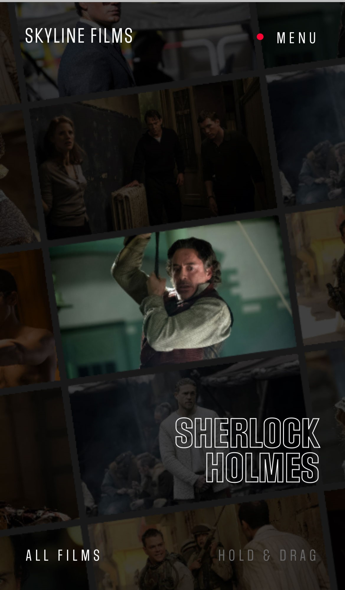
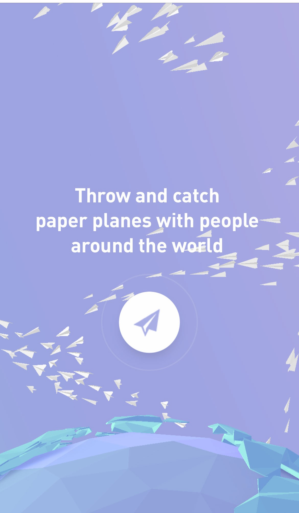
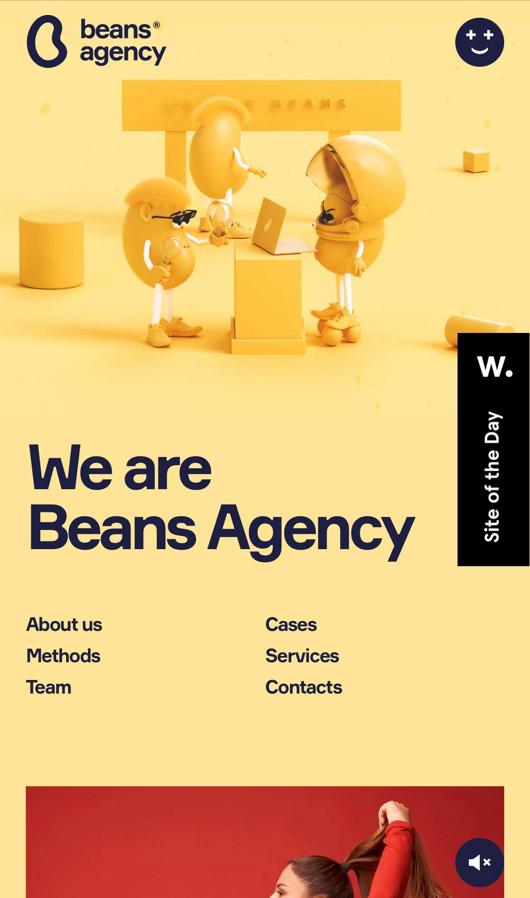

Proximity
Bruno Simon!
bruno-simon.comThis designer made is so that you have to swipe the button then it appears to raise up for you to click. The use of proximity is by making it appear to gain demension. The alignment is interesting because it is a screen with a single button, so the button needs to be aligned vertically, horizontally, and with the raised button to be aesthetically pleasing.
Alignment
Skyline Films
 skylinefilms.tvThe alignment on this one is kind of cool, the different films are aligned in rows, to appear like a film, but it is set at about a 10* angle. Then the words on the screen are all aligned within an invisible frame so they look like they belong overlaid as they are.
Repetition
Paper Planes
 paperplanes.worldThe repetition here is obviously the paper airplanes flying all over and with the airplane on the button. I'm not sure if this site is actually allowed since it's technically not for a business at all, it is just a site that you can play paper airplanes with others around the world. How fun is that?
Contrast
Beans Digital Agency
 http://beans.agencyThe entire image is yellow so the dark blue text really stands out and has great contrast. The eyes are also the dark blue which makes their eyes and glasses stand out also.